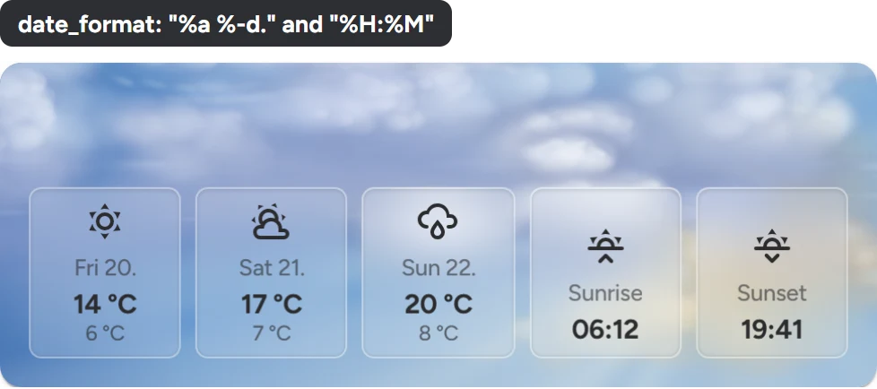
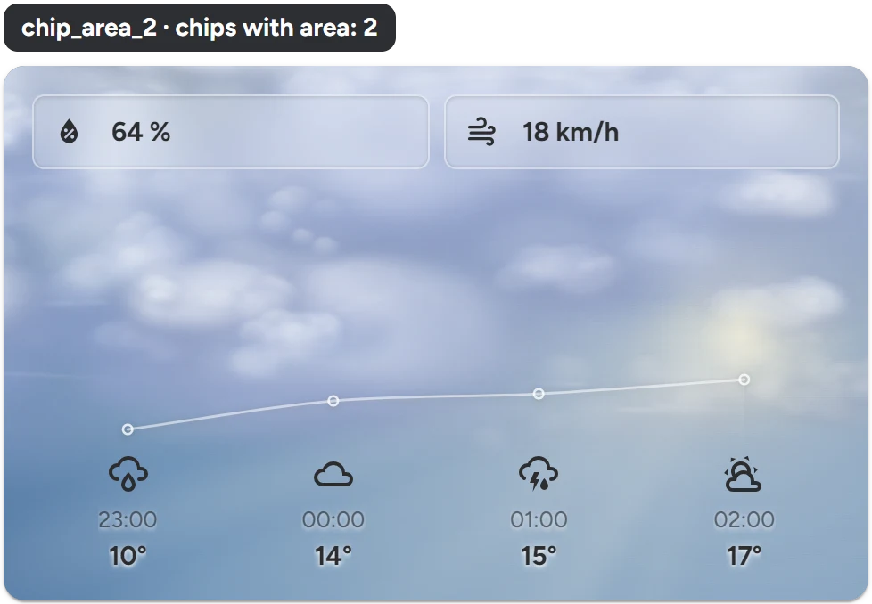
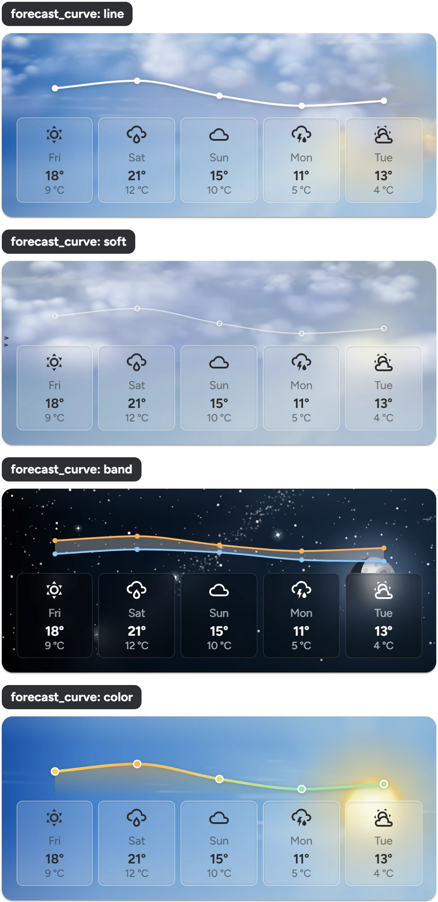
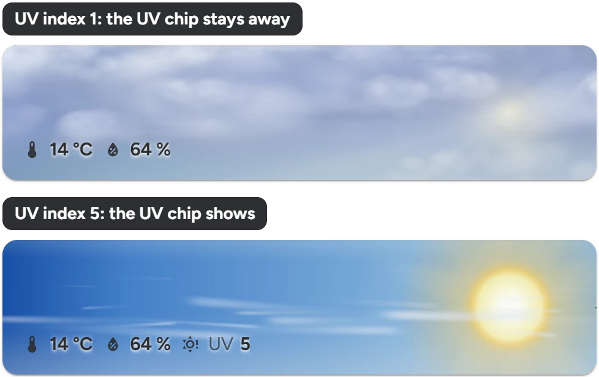
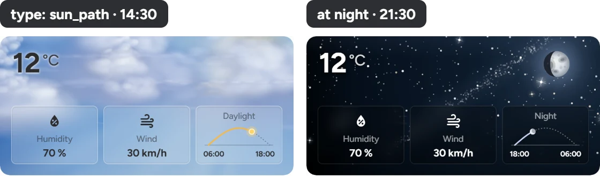

Docs · Chips & forecasts
Chips
Chips show values on the card: any entity or attribute, forecasts, rings and bars. This page lists every chip option and then walks through common setups.
Chips in the editor
Chips are the main layout element of this card. Each chip can show live entity data or forecast data, and you can add as many as you want. For a walkthrough on how to set them up, see the Chips guide.
The chip list shows every chip with its live value. Quick add above the list creates a ready chip for the temperature, humidity, wind, rain chance or tomorrow's forecast. An open chip splits its settings into tabs:
Chip
├─ Data ▸ Sensor or Forecast
│ Sensor: entity, attribute
│ Forecast: entity, forecast, forecast_offset,
│ attribute ("Show"), forecast_precision
├─ Text ▸ Label: hide_label, name, name_sensor, name_attribute,
│ date_format (forecast chips),
│ label_size, label_weight, label_overflow
│ Value: hide_value, fancy_unit, bearing_format, bearing_icon,
│ bearing_speed, unit_format or date_format (for a
│ point in time), value_precision,
│ text_size, value_weight, overflow
│ Sub value: hide_sub_value, sub_value_entity, sub_value_attribute,
│ sub_value_format, sub_value_size, sub_value_weight,
│ sub_value_position, sub_value_overflow
│ Scrolling: marquee_rtl, marquee_speed (only with marquee)
├─ Icon ▸ hide_icon, icon, icon_path, icon_size, icon_padding,
│ icon_background, icon_background_color
├─ Look ▸ Type: text, ring or bar, with the ring_* or bar_* options
│ and Ring entity or Bar entity (gauge_entity, gauge_attribute)
│ Layout: style, align, chip_round, background, background_color,
│ width, height, padding, inner_gap, text_gap
├─ Position ▸ chip area 1 or 2 (area) or free (position, position_anchor,
│ position_x, position_y), behind_effects
├─ Tap ▸ tap_action (for this chip only)
└─ Conditions ▸ visibility: entity state, entity value, screen size,
time and weekday, user (and/or/not groups in YAML)Reset all styles at the bottom of an open chip removes its style overrides, so it follows the chip area settings again.
Tip
Changing the entity in Data, in Label (name_sensor), in Sub value (sub_value_entity) or in Ring entity or Bar entity (gauge_entity) clears that field's attribute automatically, because the old attribute may not exist on the new entity.
Row options
| Option | Type | Default | Description |
|---|---|---|---|
chips |
list |
— | The list of chips to display. Each entry is an object with its own settings (see below). |
chip_area_position |
string |
bottom-left |
Where the chips row is positioned. |
chip_area_layout |
string |
wrap |
Row behavior. wrap moves overflowing chips to a new line, horizontal-scroll keeps them on one line with a hidden scrollbar and edge fades, vertical-scroll stacks them in a scrollable column, grid arranges them in equal columns. scroll is accepted as an alias for horizontal-scroll. |
chip_area_columns |
number |
1 |
Number of equal-width columns when chip_area_layout: grid is active. |
chip_area_align |
string |
start |
How chips align inside the chip area. Options: start, center, end, spread. |
chip_area_width |
string |
— | Limits the full row width (e.g., 60% or 200px). Useful to place the chips row next to the top text instead of spanning the card. |
chip_area_height |
string |
— | Sets the height of the chips row (e.g., 120px). |
chip_padding |
string |
5px 10px |
Inner padding of each chip (e.g., 5px 10px). Without a value inline chips use 5px 10px, stacked chips 6px 10px 6px 6px and vertical chips 6px 10px. |
chip_area_padding |
string |
— | Padding of the outer chips container (the wrapper around all chips). |
chip_area_gap |
string |
8px |
Space between chips. |
chip_gap |
string |
6px |
Space between the icon and text inside each chip. |
chip_style |
string |
inline |
Controls the chip layout style. inline is the default horizontal layout with icon and text side by side. stacked arranges the icon, name, and value in a compact two-column grid. vertical stacks icon, name, and value in a centered column. |
chip_area_scroll_count |
number |
— | Number of chips visible at once when using a scroll layout. Enables snap-scrolling through pages of chips. |
chip_area_grouped |
boolean |
false |
Wraps all chips into a single shared background container instead of styling each chip individually. Requires chip_area_background: true. |
chip_area_full_width |
boolean |
false |
Stretches each chip to fill the available row width. Useful in combination with chip_area_scroll_count or grid layouts. |
chip_text_size |
string |
— | Font size of the chip value text. Accepts any CSS size value (e.g., 16px, 1.2em). |
chip_label_size |
string |
— | Font size of the chip name label. |
chip_icon_size |
string |
— | Global icon size for all chips. |
chip_icon_padding |
string |
— | Global padding around the icon for all chips. |
chip_icon_background |
boolean |
false |
Adds a background behind the icon area of each chip. |
chip_area_background |
boolean |
false |
Adds a styled background behind each chip (the style is controlled by card_background_style). |
card_background_style |
string |
frosted |
Visual treatment used when chip backgrounds are enabled. Options: frosted (translucent glass), contrast (solid and readable), theme (uses Home Assistant theme colors). |
chip_area_separator |
boolean |
false |
Adds a thin divider line between chips. Only visible when chip_area_grouped is enabled. |
chip_background_color |
string |
— | Custom background color applied to all chips. Accepts any CSS color value, including rgba(). |
chip_icon_background_color |
string |
— | Custom background color for the icon area of all chips. |
chip_area_background_color |
string |
— | Custom background color for the grouped container when chip_area_grouped is enabled. |
chip_text_gap |
string |
0.35em |
Gap between the name label and the value text inside each chip. |
chip_area_hide |
boolean |
false |
Hides the chips row entirely. |
chip_area_2 |
object |
— | A second chip area with its own place, layout and look, for the chips with area: 2. See Two chip areas. |
forecast_curve |
string |
— | Draws a temperature curve over the forecast chips of the chip area that show the temperature (at least two): line (white), soft (thin and see-through), band (high and low with the range between, needs templow; without it a line) or color (colored by the temperature). off turns off a curve that a layout brings. See Temperature curve. |
forecast_curve_height |
number |
46 |
Room the curve takes above the chips, in pixels (24–120). |
Per-chip options
Each entry inside the chips list accepts the following keys.
| Option | Type | Default | Description |
|---|---|---|---|
entity |
string |
— | Required. Any sensor, binary_sensor, or weather entity. Pointing it at the weather entity shows the current state (e.g., Sunny). |
attribute |
string |
— | Read a specific attribute of the entity instead of its state (e.g., humidity on a weather entity). |
forecast |
string |
— | Set to daily or hourly to show forecast data instead of live entity data. The chip's name is generated automatically (day names for daily, time for hourly). Requires the entity to be a weather entity. |
forecast_offset |
number |
0 |
Which forecast entry to display. 0 = today/now, 1 = tomorrow/next hour, and so on. Daily goes up to 6, hourly up to 23. When your weather service sends fewer entries, a chip past the last one stays hidden instead of showing the last entry twice. |
forecast_precision |
number |
— | Maximum number of decimal places for forecast values (0–2). Only limits the number shown; trailing zero decimals are trimmed (e.g. a whole number stays without a decimal point even at precision 1 or 2). |
value_precision |
number |
— | Forces the chip's main value to always show exactly this many decimal places (0–2), padding with zeros if needed (e.g. 22 becomes 22.0 at precision 1). Leave unset to use Home Assistant's own display precision for the entity/attribute ("Auto"). Does not apply to forecast chips — use forecast_precision for those. |
unit_format |
string |
— | Replaces the unit shown after the value. Placed directly after the value with no space, e.g. ° turns 12 °C into 12°. |
date_format |
string |
— | Prints a date or time with codes, like Home Assistant templates: %a day name, %A long day name, %d day, %m month, %b/%B month name, %y/%Y year, %H hour (24 h), %I hour (12 h), %M minute, %S second, %p AM/PM. A - after % drops the leading zero (%-d prints 5). Works on the label of a forecast chip (%a %-d. prints Thu 12.) and on a value that is a point in time, such as next_rising of sun.sun (%H:%M). Without a code the usual text stays. |
bearing_format |
string |
degrees |
Shows a wind direction as degrees (degrees, the number as Home Assistant delivers it, e.g. 250; add unit_format: ° for the sign; with bearing_icon or bearing_speed the sign is added), as a compass point (cardinal, e.g. WSW) or as both (both, e.g. WSW 250°). Works on the wind_bearing attribute of a weather entity, live or forecast, and on sensors with the wind_direction device class. Compass points are in German or English. See Wind compass for an image. |
bearing_icon |
string |
— | Turns the chip icon into a pointer that follows the wind: arrow or filled point where the wind blows, like the wind lines; needle is a compass needle whose red tip points where the wind comes from. Works on the same chips as bearing_format and replaces icon. |
bearing_speed |
boolean |
false |
Adds the wind speed of the weather entity after the direction, for example NW · 6.5 mph, in the unit of the entity. Only on chips that read wind_bearing of a weather entity, live or forecast. |
name |
string |
— | Optional label shown before the value (e.g., Wind). For forecast chips, this overrides the auto-generated day/time name. |
icon |
string |
auto | An mdi: icon (e.g., mdi:water-percent), the keyword weather to automatically show the icon matching the current weather state (or the forecasted condition when using forecast), or empty to inherit the sensor's own icon. |
icon_path |
string |
— | Folder for custom SVG icons (e.g., /local/weather-icons/). When set, the value of icon resolves to an image file instead of an MDI icon. For example, icon: weather combined with icon_path: /local/weather-icons/ loads /local/weather-icons/rainy.svg for rainy weather. You can find the animated SVG icons from the examples here. |
hide_icon |
boolean |
false |
Hides the icon for this chip. |
hide_label |
boolean |
false |
Hides the name label for this chip. |
hide_value |
boolean |
false |
Hides the value text for this chip. |
fancy_unit |
boolean |
false |
Renders the temperature unit as a small superscript next to the value. Only works when reading a temperature attribute from a weather entity. |
width |
string |
— | Limits the chip's width in pixels. Use 200px (or 200, which is normalized to 200px). Required for marquee overflow. |
height |
string |
— | Sets the chip height in pixels. Use 40px (or 40, which is normalized to 40px). |
overflow |
string |
ellipsis |
How text exceeding width is handled. Options: ellipsis (cuts off with …), clip (cuts off without indicator), wrap (breaks onto a second line), marquee (scrolls horizontally). |
label_overflow |
string |
ellipsis |
How the name label handles overflow. Same options as overflow. |
marquee_speed |
number |
30 |
Scroll speed in pixels per second when any overflow mode is marquee (overflow, label_overflow, or sub_value_overflow). Minimum 5. |
marquee_rtl |
boolean |
false |
Reverses marquee direction (scrolls right-to-left) for all marquee-based text overflows. |
tap_action |
object |
more-info |
A standard Home Assistant tap action scoped to this chip. |
area |
number |
1 |
2 puts the chip into the second chip area (chip_area_2). Freely placed chips (position: custom) belong to no area. |
visibility |
list |
— | Shows the chip only while every condition in the list holds. Same format as the visibility of Home Assistant cards: state, numeric_state, screen, user, time, and and/or/not groups. Hidden chips leave no gap. See Show chips only when they matter. |
name_sensor |
string |
— | An entity whose state (or attribute) is used as the chip's dynamic name label. Updates in real time. |
name_attribute |
string |
— | Reads a specific attribute from the name_sensor entity instead of its state. |
hide_sub_value |
boolean |
false |
Hides the optional secondary value. |
sub_value_entity |
string |
— | Entity used for the secondary value. |
sub_value_attribute |
string |
— | Attribute read from sub_value_entity instead of its state. On a forecast chip, templow shows the daily low next to the high. |
sub_value_format |
string |
— | Optional text format for the secondary value. |
sub_value_position |
string |
below |
Where to display the secondary value. Use beside for an inline range such as 8 – 18, or leave it unset to show it below the main value. |
sub_value_overflow |
string |
ellipsis |
How the secondary value handles overflow. Uses the same options as overflow. |
position |
string |
— | Set to custom to detach this chip from the row and place it freely on the card using position_anchor, position_x, and position_y. |
position_anchor |
string |
top-left |
Anchor point for a free-positioned chip. Uses a 9-cell grid (e.g., top-left, center, bottom-right). |
position_x |
string |
0 |
Horizontal offset for a free-positioned chip (e.g., 20px, 10%), measured inwards from the anchored edge. With a centered anchor (center, top-center, bottom-center) a positive value moves the chip to the right. |
position_y |
string |
0 |
Vertical offset for a free-positioned chip (e.g., 20px, 10%), measured inwards from the anchored edge. With a vertically centered anchor (center, center-left, center-right) a positive value moves the chip down. |
behind_effects |
boolean |
false |
Places the chip behind the weather animations. Only works on free-positioned chips. |
Per-chip style overrides
Every chip can override the global row styles individually. This is what makes it possible to mix completely different-looking chips in a single card, for example a large stacked forecast chip next to a small inline live sensor.
| Option | Type | Default | Description |
|---|---|---|---|
style |
string |
— | Overrides the global chip_style for this chip. Accepts inline, stacked, or vertical. |
background |
boolean |
— | Overrides the global chip_area_background for this chip. Set to false to hide the background on a specific chip even when backgrounds are globally enabled (or the other way around). |
background_color |
string |
— | Custom background color for this chip. Accepts any CSS color value, including rgba() for transparency. |
padding |
string |
— | Overrides the chip padding for this chip only. |
text_size |
string |
— | Overrides the value text size for this chip. |
label_size |
string |
— | Overrides the name label text size for this chip. |
label_weight |
string |
— | Font weight of the name label (e.g., 500, 600, 700). |
inner_gap |
string |
— | Overrides the icon/text gap for this chip. |
icon_size |
string |
— | Overrides the icon size for this chip. |
icon_padding |
string |
— | Overrides the icon padding for this chip. |
icon_background |
boolean |
— | Overrides the global chip_icon_background for this chip. |
icon_background_color |
string |
— | Custom background color for the icon area. Accepts any CSS color value, including rgba(). |
align |
string |
— | Content alignment within this chip. Options: start, center, end. |
value_weight |
string |
— | Font weight of the value text (e.g., 500, 600, 700). |
sub_value_size |
string |
— | Overrides the secondary value text size for this chip. |
sub_value_weight |
string |
— | Font weight of the secondary value (e.g., 500, 600, 700). |
text_gap |
string |
— | Overrides the gap between the name label and value for this chip. |
chip_round |
boolean |
false |
Forces a fully rounded (pill) shape on this chip. |
Ring & Bar gauge options
Setting type to ring or bar turns a chip into a circular or linear gauge instead of standard text. Works well for battery levels, humidity, CPU usage, or any numeric sensor. See the Chips guide for usage examples and threshold configuration.
| Option | Type | Default | Description |
|---|---|---|---|
type |
string |
— | Set to ring or bar to enable the gauge, or to sun_path on sun.sun for the arc of the sun, see Sun path. |
ring_min / bar_min |
number |
0 |
Minimum value for the gauge range. |
ring_max / bar_max |
number |
100 |
Maximum value for the gauge range. |
ring_width / bar_height |
number |
4 |
Thickness of the ring stroke, or height of the bar, in pixels. |
ring_gap / bar_gap |
number |
3 |
Gap between the gauge and the chip content in pixels. |
ring_color / bar_color |
string |
theme primary | Color of the filled portion. Accepts any CSS color. |
ring_threshold_mode / bar_threshold_mode |
string |
— | How thresholds are applied. solid fills the whole gauge with the matched color. segments draws each range as a separate arc/segment. gradient blends between colors. |
ring_thresholds / bar_thresholds |
list |
— | A list of { value, color } entries. The gauge changes color once the value passes a threshold. |
gauge_entity |
string |
— | Optional secondary entity that drives the gauge fill, independent of the chip's main entity/attribute. |
gauge_attribute |
string |
— | Reads a specific attribute from gauge_entity instead of its state. |
Chips & Forecasts
Chips are basically buttons you can optionally add to the card. You can add as many as you like and show live info, like current weather conditions or data from any Home Assistant entity, but also weather forecasts. You can leave them grouped in a row and make them all look the same (useful for building a daily forecast), or you can style and position each one individually. The option references are above; the walkthroughs below cover the "how" with examples.
Start with a simple chip row:
chips:
- entity: weather.your_weather_entity
icon: weather
- entity: sensor.outside_humidity
name: Humidity
- entity: sensor.wind_speed
icon: mdi:weather-windyForecast chips
By default, a chip reads the current state of its entity. Setting forecast to daily or hourly switches it to forecast mode instead. In this mode, the chip subscribes to the weather entity's forecast data and displays a specific future entry.
Use forecast_offset to pick which entry: 0 is today (or now), 1 is tomorrow (or the next hour), and so on. The chip automatically generates a name label: day names like "Mon", "Tue" for daily, or times like "14:00" for hourly. You can still override this with name if you want a custom label.
When using icon: weather on a forecast chip, the icon matches the forecasted condition for that entry, not the current weather.
chips:
- entity: weather.your_weather_entity
forecast: daily
attribute: temperature
forecast_offset: 1
sub_value_attribute: templow
sub_value_position: beside
icon: weather
icon_path: /local/weather-icons/
- entity: weather.your_weather_entity
forecast: hourly
attribute: temperature
forecast_offset: 3
unit_format: "°"The first chip shows tomorrow's temperature range (low – high) with a weather icon matching tomorrow's condition. The second chip shows the temperature 3 hours from now, with ° directly after the value instead of the full unit.
date_format writes the day name, the date or the time your way, with the same codes as Home Assistant templates. On a forecast chip it changes the label, on a value that is a point in time, like the sunrise of sun.sun, the value itself.

chip_style: vertical
chip_area_layout: grid
chip_area_columns: 5
chip_area_width: 100%
chip_area_background: true
chips:
- entity: weather.home
forecast: daily
forecast_offset: 0
attribute: temperature
sub_value_attribute: templow
icon: weather
date_format: "%a %-d."
- entity: weather.home
forecast: daily
forecast_offset: 1
attribute: temperature
sub_value_attribute: templow
icon: weather
date_format: "%a %-d."
- entity: weather.home
forecast: daily
forecast_offset: 2
attribute: temperature
sub_value_attribute: templow
icon: weather
date_format: "%a %-d."
- entity: sun.sun
attribute: next_rising
name: Sunrise
icon: mdi:weather-sunset-up
date_format: "%H:%M"
- entity: sun.sun
attribute: next_setting
name: Sunset
icon: mdi:weather-sunset-down
date_format: "%H:%M"In a grid every tile of a row gets the same width and height, so the sun times line up with the forecast tiles.
For the full list of forecast-related options (forecast, forecast_offset, forecast_precision, sub_value_attribute, sub_value_position, value_precision, unit_format), see Per-chip options in Appearance.
Two chip areas
One chip area holds one row or grid. For a card with tiles in the middle and a forecast row at the bottom, add a second area with chip_area_2 and give its chips area: 2. Both areas have their own place, layout, chip style and background; the chip sizes and colors of the card apply to both. In the editor, pick Chip area 2 in a chip's Position tab, then set the area under Chips → Chip area 2.

type: custom:atmo-weather-card
weather_entity: weather.home
sun_entity: sun.sun
card_height: 300
chip_area_position: top-left
chip_area_layout: grid
chip_area_columns: 2
chip_area_width: 100%
chip_area_background: true
chip_style: stacked
chip_area_2:
position: bottom-left
layout: grid
columns: 4
width: 100%
style: vertical
forecast_curve: soft
chips:
- entity: weather.home
attribute: humidity
icon: mdi:water-percent
- entity: weather.home
attribute: wind_speed
icon: mdi:weather-windy
- entity: weather.home
forecast: hourly
forecast_offset: 1
attribute: temperature
icon: weather
area: 2
- entity: weather.home
forecast: hourly
forecast_offset: 2
attribute: temperature
icon: weather
area: 2
- entity: weather.home
forecast: hourly
forecast_offset: 3
attribute: temperature
icon: weather
area: 2
- entity: weather.home
forecast: hourly
forecast_offset: 4
attribute: temperature
icon: weather
area: 2chip_area_2 takes the names of the chip_area_* options without the prefix. Anything not set uses the default, not the value of the first area.
| Key | Type | Default | Description |
|---|---|---|---|
position |
string |
top-left |
Where the area sits, like chip_area_position. |
layout |
string |
wrap |
wrap, grid, horizontal-scroll or vertical-scroll, like chip_area_layout. |
columns |
number |
1 |
Columns of the grid layout. |
scroll_count |
number |
— | Chips visible at once in a scroll layout. |
align |
string |
start |
start, center, end or spread. |
width, height, padding, gap |
string |
— | Like chip_area_width, chip_area_height, chip_area_padding and chip_area_gap. |
style |
string |
chip_style |
inline, stacked or vertical. Without it the area uses the card's chip_style. |
background |
boolean |
false |
A background behind each chip, like chip_area_background. |
background_style |
string |
card_background_style |
frosted, contrast or theme. |
grouped, full_width, separator, hide |
boolean |
false |
Like the chip_area_* switches of the same name. |
background_color |
string |
— | Like chip_area_background_color. |
The temperature curve draws over the first area when it has at least two forecast temperatures, else over the second.
Temperature curve
forecast_curve draws the course of the temperature over the forecast chips, daily or hourly. It uses every forecast chip in the chip area that shows temperature (at least two) and puts a point above the middle of each. Freely placed chips do not count. With the chip area at the top of the card the curve sits below the chips.
| Value | Look |
|---|---|
line |
A white line with points. Works on every sky. |
soft |
A thin, see-through line with hollow points and a faint fill below. Quiet; fits frosted chips. |
band |
The high in orange, the low in blue, the range between them filled. Needs templow; most hourly forecasts do not have it and then show the line. |
color |
Colored by the temperature: blue when cold, green when mild, orange when warm, red when hot, with a soft fill below. |

type: custom:atmo-weather-card
weather_entity: weather.home
sun_entity: sun.sun
card_height: 250
chip_style: vertical
chip_area_position: bottom-center
chip_area_background: true
chip_area_layout: grid
chip_area_columns: 5
chip_area_width: 100%
chip_area_gap: 6px
forecast_curve: color
chips:
- entity: weather.home
forecast: daily
forecast_offset: 1
attribute: temperature
icon: weather
forecast_precision: 0
unit_format: °
sub_value_attribute: templow
- entity: weather.home
forecast: daily
forecast_offset: 2
attribute: temperature
icon: weather
forecast_precision: 0
unit_format: °
sub_value_attribute: templow
- entity: weather.home
forecast: daily
forecast_offset: 3
attribute: temperature
icon: weather
forecast_precision: 0
unit_format: °
sub_value_attribute: templow
- entity: weather.home
forecast: daily
forecast_offset: 4
attribute: temperature
icon: weather
forecast_precision: 0
unit_format: °
sub_value_attribute: templow
- entity: weather.home
forecast: daily
forecast_offset: 5
attribute: temperature
icon: weather
forecast_precision: 0
unit_format: °
sub_value_attribute: templowGive the card enough height for the curve: about forecast_curve_height (46 px) more than without it. In the editor the curve is under Chips → Temperature curve.
Per-chip styling
Every chip can override the global row styles. This means you can mix different chip formats, backgrounds, sizes, and spacing in one card without needing separate rows or CSS hacks.
For example, you might want most chips to be small inline elements but make one specific forecast chip larger with a stacked layout and its own background color:
chip_style: inline
chip_area_background: true
chips:
- entity: sensor.outside_temperature
- entity: sensor.humidity
- entity: weather.your_weather_entity
forecast: daily
attribute: temperature
forecast_offset: 1
style: stacked
background_color: "rgba(0, 0, 0, 0.3)"
padding: 12px 16px
text_size: 18px
icon: weather
icon_path: /local/weather-icons/The first two chips follow the global inline style and default background. The third chip overrides everything it needs to look different. All per-chip style overrides are listed under Per-chip style overrides in Appearance.
Free positioning
Any chip can be pulled out of the row and placed freely on the card. Set position: custom and use the anchor/offset system to put it exactly where you want.
chips:
- entity: sensor.outside_temperature
position: custom
position_anchor: top-right
position_x: 20px
position_y: 10px
background: trueThis places the temperature chip 20px from the right and 10px from the top, independent of where the chips row sits. The position_anchor uses the same 9-cell grid as the other position options (top-left, center, bottom-right, etc.).
Free-positioned chips can still use all the same styling and forecast options as regular chips.
Show chips only when they matter
A chip with a visibility list shows only while every condition in it holds. The format is the same as the visibility of Home Assistant cards, so conditions copied from a card work here too. A hidden chip leaves no gap, the others move up. In the editor, the Conditions tab of a chip builds the list and says whether the chip is shown right now.
chips:
- entity: weather.home
attribute: temperature
- entity: weather.home
attribute: uv_index
name: UV
visibility:
- condition: numeric_state
entity: weather.home
attribute: uv_index
above: 2
- entity: weather.home
attribute: wind_speed
name: Wind
visibility:
- condition: screen
media_query: "(min-width: 768px)"
- condition: time
after: "06:00"
before: "22:00"The UV chip appears only above UV index 2. The wind chip shows on tablets and larger screens between 06:00 and 22:00.

| Condition | Keys |
|---|---|
state |
entity, optional attribute, and state or state_not (one value or a list). A value that names an entity compares against that entity's state. |
numeric_state |
entity, optional attribute, above and/or below. Both may name an entity, then its state is the limit. |
screen |
media_query, a CSS media query such as (max-width: 767px). The editor fills it from Phone, Tablet, Desktop and Wide screen. |
time |
after, before (HH:MM, may cross midnight like 22:00 to 06:00) and weekdays (mon … sun). |
user |
users, a list of Home Assistant user ids. |
and, or, not |
conditions, a list of conditions. not hides the chip when all of them hold. The editor shows these groups but they are changed in YAML. |
Ring & bar gauges
Any chip can be turned into a circular or linear gauge by setting type: ring or type: bar. The gauge fills proportionally based on the entity's value within a min/max range. This works well for things like battery levels, humidity, CPU usage, or any numeric sensor.
chips:
- entity: sensor.living_room_humidity
type: ring
ring_min: 0
ring_max: 100
ring_width: 4
ring_gap: 3
ring_color: "#03a9f4"
style: vertical
hide_label: true
icon: mdi:water-percentYou can add color thresholds that change the gauge color when the value passes a certain point. Threshold colors support three modes: solid fills the entire gauge with the matching threshold color, segments draws each threshold range as a separate colored arc/segment, and gradient blends smoothly between threshold colors.
chips:
- entity: sensor.cpu_temperature
type: ring
ring_min: 30
ring_max: 100
ring_color: "#4caf50"
ring_threshold_mode: solid
ring_thresholds:
- value: 60
color: "#ff9800"
- value: 80
color: "#f44336"Full option reference (including the bar equivalents and gauge_entity/gauge_attribute) is under Ring & Bar gauge options in Appearance.
Sun path
type: sun_path on a chip with sun.sun draws the day as a flat arc: sunrise on the left, sunset on the right and the sun where it stands now; the way it has gone is drawn solid. At night the arc runs from sunset to the next sunrise with the moon on it. The label says Daylight or Night (in German Tageslicht or Nacht) unless you set a name, and the times follow the 12 or 24 hours of your Home Assistant profile, or date_format. In the editor it is the chip type Sun path, offered for sun entities.

chip_style: vertical
chip_area_layout: grid
chip_area_columns: 3
chip_area_width: 100%
chip_area_background: true
chips:
- entity: weather.home
attribute: humidity
name: Humidity
icon: mdi:water-percent
- entity: weather.home
attribute: wind_speed
name: Wind
icon: mdi:weather-windy
- entity: sun.sun
type: sun_pathIt fits best as a tile in a grid row, as above. In a plain row it keeps the width of a tile. The colors of the solid part come from --awc-sunpath-color by day and --awc-sunpath-night-color at night (Own CSS).